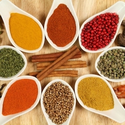

It's time to choose what to cook
Choose a recipe to rescue your chicken and start cooking!

Chicken burrito
Yes, let's try it!

Chicken korma
Yes, let's try it!
Previous
Next
Ingredients
- 4 British chicken breast fillets (around 600g)
- 2 tbsp sunflower or vegetable oil
- 40g butter
- 2 brown onions, coarsely grated or very finely chopped
- 4 tsp ginger and garlic paste
- 2 tsp ground cumin
- 2 tsp ground coriander
- 1 tsp ground turmeric
- ¼ tsp mild chilli powder
- 2 tbsp mango chutney or 2 tsp caster sugar
- 300ml chicken stock
- 100ml coconut cream
- 1-2 tbsp toasted flaked almonds, to garnish (optional)
- fresh coriander leaves, to garnish (optional)
- basmati rice, cooked to pack instructions, to serve

- Cut each chicken breast into small chunks (roughly 2.5cm) and season generously with freshly ground black pepper.
Heat 1 tbsp oil in a large nonstick frying pan or wok and fry the chicken over a medium-high heat for 5-6 mins, turning occasionally.
Transfer the chicken to a plate using a slotted spoon or spatula and return the pan to the heat.
Keep the chicken warm by covering in foil or placing in the oven on a low heat.
- Add the remaining oil, butter and onions to the pan and cook over a medium heat, stirring often, for 10 mins, or until the onions are soft and lightly browned.
Stir in the ginger and garlic paste and ground spices and cook, stirring continuously, for a further 1 min.
- Add the mango chutney and stock to the spiced onions and bring to a simmer.
Cook for 5 mins or until the liquid has reduced by roughly half, stirring regularly.
(For an extra smooth sauce, blitz the mixture with a blender.)
- Return the chicken to the pan with the onions, add the cream and simmer gently, stirring occasionally, for 5-6 mins, until the chicken is piping hot and cooked through.
Add a splash of water to loosen the sauce if necessary.
- Garnish the curry with toasted flaked almonds and scatter with fresh coriander, if you like.
Serve with freshly cooked rice.